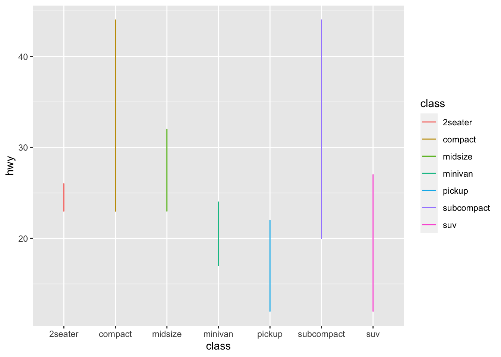

Chapter 2 Exploratory Data Analysis
EDA(Exploratory Data Analysis) is necessary for data analyst to check the dataset before statistical modeling(or machine learning)
2.1 head and tail
df_mpg <- data.frame(ggplot2::mpg)
head(df_mpg)## manufacturer model displ year cyl trans drv cty hwy fl class
## 1 audi a4 1.8 1999 4 auto(l5) f 18 29 p compact
## 2 audi a4 1.8 1999 4 manual(m5) f 21 29 p compact
## 3 audi a4 2.0 2008 4 manual(m6) f 20 31 p compact
## 4 audi a4 2.0 2008 4 auto(av) f 21 30 p compact
## 5 audi a4 2.8 1999 6 auto(l5) f 16 26 p compact
## 6 audi a4 2.8 1999 6 manual(m5) f 18 26 p compactwe have loaded mpg dataset from ggplot2 package. ggplot2 contains multiple useful datasets and various visualization tools.
head function extract top 6 rows of input dataset. In contrast, we can extract bottom 6 rows using tail function.
tail(df_mpg)## manufacturer model displ year cyl trans drv cty hwy fl class
## 229 volkswagen passat 1.8 1999 4 auto(l5) f 18 29 p midsize
## 230 volkswagen passat 2.0 2008 4 auto(s6) f 19 28 p midsize
## 231 volkswagen passat 2.0 2008 4 manual(m6) f 21 29 p midsize
## 232 volkswagen passat 2.8 1999 6 auto(l5) f 16 26 p midsize
## 233 volkswagen passat 2.8 1999 6 manual(m5) f 18 26 p midsize
## 234 volkswagen passat 3.6 2008 6 auto(s6) f 17 26 p midsizeIt’s important to check rows in this way, because most of dataset we meet are so large that it can’t be shown just in one page.
2.2 dim and str
using dim function, we can check the size of dataset. The size means rows x columns.
dim(df_mpg)## [1] 234 11This mpg dataset has 234 rows and 11 columns(features).
We do not need to use this function just for check entire dataset.
dim(head(df_mpg))## [1] 6 11dim(df_mpg[,2:4])## [1] 234 3dim(df_mpg['model'])## [1] 234 1but we can’t use dim for 1-dim vector. Note that df_mpg[‘model’] is not a vector, it’s dataframe yet.
str(df_mpg['model'])## 'data.frame': 234 obs. of 1 variable:
## $ model: chr "a4" "a4" "a4" "a4" ...It’s different from df_mpg$model
str(df_mpg$model)## chr [1:234] "a4" "a4" "a4" "a4" "a4" "a4" "a4" "a4 quattro" "a4 quattro" ...This is vector. And it’s same with df_mpg[[‘model’]]
str(df_mpg[['model']])## chr [1:234] "a4" "a4" "a4" "a4" "a4" "a4" "a4" "a4 quattro" "a4 quattro" ...2.3 summary
we can check summary statistics using summary function.
summary(df_mpg)## manufacturer model displ year
## Length:234 Length:234 Min. :1.600 Min. :1999
## Class :character Class :character 1st Qu.:2.400 1st Qu.:1999
## Mode :character Mode :character Median :3.300 Median :2004
## Mean :3.472 Mean :2004
## 3rd Qu.:4.600 3rd Qu.:2008
## Max. :7.000 Max. :2008
## cyl trans drv cty
## Min. :4.000 Length:234 Length:234 Min. : 9.00
## 1st Qu.:4.000 Class :character Class :character 1st Qu.:14.00
## Median :6.000 Mode :character Mode :character Median :17.00
## Mean :5.889 Mean :16.86
## 3rd Qu.:8.000 3rd Qu.:19.00
## Max. :8.000 Max. :35.00
## hwy fl class
## Min. :12.00 Length:234 Length:234
## 1st Qu.:18.00 Class :character Class :character
## Median :24.00 Mode :character Mode :character
## Mean :23.44
## 3rd Qu.:27.00
## Max. :44.00If column is categorical variable, like model, trans, drv, manufacturer, fl, class, it just shows Length, Class and Mode. But in case of numerical, it can shows mean of variable, median of variable, minimum of variable, maximum of variable and 1st and 3rd quartile.
2.4 table
And R also provides a frequency table. We can use this as call table function.
table(df_mpg$model)##
## 4runner 4wd a4 a4 quattro
## 6 7 8
## a6 quattro altima c1500 suburban 2wd
## 3 6 5
## camry camry solara caravan 2wd
## 7 7 11
## civic corolla corvette
## 9 5 5
## dakota pickup 4wd durango 4wd expedition 2wd
## 9 7 3
## explorer 4wd f150 pickup 4wd forester awd
## 6 7 6
## grand cherokee 4wd grand prix gti
## 8 5 5
## impreza awd jetta k1500 tahoe 4wd
## 8 9 4
## land cruiser wagon 4wd malibu maxima
## 2 5 3
## mountaineer 4wd mustang navigator 2wd
## 4 9 3
## new beetle passat pathfinder 4wd
## 6 7 4
## ram 1500 pickup 4wd range rover sonata
## 10 4 7
## tiburon toyota tacoma 4wd
## 7 7table(df_mpg$class)##
## 2seater compact midsize minivan pickup subcompact suv
## 5 47 41 11 33 35 62It’s helpful to check counts of each values in variable. To better use, we can use this table with visualizing original variable.
first, let’s import ggplot2 library
library(ggplot2)qplot(df_mpg$class)You should be careful to visualize the table as it is. If you visualize the table, it shows the different one.
qplot(table(df_mpg$class))## Don't know how to automatically pick scale for object of type table. Defaulting to continuous.## `stat_bin()` using `bins = 30`. Pick better value with `binwidth`.
2.5 qplot
Visualization is always important part for EDA. Let’s study more about qplot.
we use mpg dataset. Extract top 5 rows
head(mpg)## # A tibble: 6 x 11
## manufacturer model displ year cyl trans drv cty hwy fl class
## <chr> <chr> <dbl> <int> <int> <chr> <chr> <int> <int> <chr> <chr>
## 1 audi a4 1.8 1999 4 auto(l5) f 18 29 p compa…
## 2 audi a4 1.8 1999 4 manual(m5) f 21 29 p compa…
## 3 audi a4 2 2008 4 manual(m6) f 20 31 p compa…
## 4 audi a4 2 2008 4 auto(av) f 21 30 p compa…
## 5 audi a4 2.8 1999 6 auto(l5) f 16 26 p compa…
## 6 audi a4 2.8 1999 6 manual(m5) f 18 26 p compa…qplot means “quick plot.” It is useful for quickly running our plot.
let’s see some feature’s frequency using qplot
qplot(data=mpg, x=manufacturer)
qplot(data=mpg, x=fl)
qplot(data=mpg, x=year)## `stat_bin()` using `bins = 30`. Pick better value with `binwidth`.
it’s weired. year data have only 2 cases.
let’s check that.
table(mpg$year)##
## 1999 2008
## 117 117yes. it’s contain only the car data that manufacturered in 1999 and 2008. We have to think about this when analysis this dataset.
and let’s go ahead and check the other feature one more.
qplot(data=mpg, x=class)
like this, we can show data’s frequency by input x(feature).
and class contains types of car like size or shape etc.
table(mpg$class)##
## 2seater compact midsize minivan pickup subcompact suv
## 5 47 41 11 33 35 62Then, what will happen if we input y into qplot function?
qplot(data=mpg, x=class, y=hwy)
This is scatter plot. From this plot, we can check highway fuel economy of each car class. Pick-up truck and SUV are not good at average fuel economy.
But, we have more useful plot than scatter plot for checking the mean of data. Let’s use that.
qplot(data=mpg, x=class, y=hwy, geom='boxplot', color=class)
It’s box plot. We can check means easily and even outliers. It’s very important that how our data visualized and what tools we use.
If we use line plot for this situation, It is difficult to accurately show the data.
qplot(data=mpg, x=class, y=hwy, geom='line', color=class)
2.6 hist
R have basic histplot function. We can use this by calling hist(). hist means histogram. It shows the distribution of continuous(numeric) variable.
hist(mpg$hwy)If you input categorical variable(ex. mpg$class) into hist function,
it returns error that Error in hist.default(mpg$class) : 'x' must be numeric
2.7 is.na
is.na() is the function that check whether the input has missing value or not.
and the input can be vector, list, data.frame etc.
names <- c('Kim', 'Jay', 'toreto', NA)
is.na(names)## [1] FALSE FALSE FALSE TRUEwe can count NA by using table function.
table(is.na(names))##
## FALSE TRUE
## 3 1How about a dataframe?
id <- c('0000', '0010', '0022', NA)
birth <- c('880201', '000106', '930128', NA)
customer_df <- data.frame(names, id, birth)
customer_df## names id birth
## 1 Kim 0000 880201
## 2 Jay 0010 000106
## 3 toreto 0022 930128
## 4 <NA> <NA> <NA>table(is.na(customer_df))##
## FALSE TRUE
## 9 3we can visualize table by using plot() method
plot(table(is.na(customer_df)))
If we just need to check only NA, we can use sum().
sum(is.na(customer_df))## [1] 3There are many ways to fill NA.
first, just fill NA as specific value.
customer_df[4,]['names'] <- 'haword'
customer_df## names id birth
## 1 Kim 0000 880201
## 2 Jay 0010 000106
## 3 toreto 0022 930128
## 4 haword <NA> <NA>or we can use ifelse() function like this.
ifelse(is.na(customer_df$id), 'Missing', customer_df$id)## [1] "0000" "0010" "0022" "Missing"2.8 na.omit
or we can delete all missing values.
customer_df <- na.omit(customer_df)
customer_df## names id birth
## 1 Kim 0000 880201
## 2 Jay 0010 000106
## 3 toreto 0022 9301282.9 barplot
In case of outliers are in data frame, we have to select how to handle this outliers.
If you have great domain knowledge, you can just use visualization and judge whether this value is outlier or not.
height <- c(180, 177, 17)
customer_df$height <- height
barplot(customer_df$height, names=customer_df$names)is that right? is Toreto’s height 17(cm)? No. It’s may be typing error. maybe it’s 170, 177 etc.
In many case, there are so many data in dataset so that it’s hard to check one by one through table, so it’s so useful to use visualization.
2.10 boxplot
Especially when you do not have deep domain knowledge or want to look for statistical outliers, boxplot is a great help.
boxplot(mpg$cty)
We can see 4 outliers in boxplot. let’s check them.
head(mpg)## # A tibble: 6 x 11
## manufacturer model displ year cyl trans drv cty hwy fl class
## <chr> <chr> <dbl> <int> <int> <chr> <chr> <int> <int> <chr> <chr>
## 1 audi a4 1.8 1999 4 auto(l5) f 18 29 p compa…
## 2 audi a4 1.8 1999 4 manual(m5) f 21 29 p compa…
## 3 audi a4 2 2008 4 manual(m6) f 20 31 p compa…
## 4 audi a4 2 2008 4 auto(av) f 21 30 p compa…
## 5 audi a4 2.8 1999 6 auto(l5) f 16 26 p compa…
## 6 audi a4 2.8 1999 6 manual(m5) f 18 26 p compa…library(dplyr)##
## Attaching package: 'dplyr'## The following objects are masked from 'package:stats':
##
## filter, lag## The following objects are masked from 'package:base':
##
## intersect, setdiff, setequal, unionmpg %>%
select(manufacturer, model, year, cty) %>%
arrange(desc(cty)) %>%
head(10)## # A tibble: 10 x 4
## manufacturer model year cty
## <chr> <chr> <int> <int>
## 1 volkswagen new beetle 1999 35
## 2 volkswagen jetta 1999 33
## 3 volkswagen new beetle 1999 29
## 4 honda civic 1999 28
## 5 toyota corolla 2008 28
## 6 honda civic 2008 26
## 7 toyota corolla 1999 26
## 8 toyota corolla 2008 26
## 9 honda civic 1999 25
## 10 honda civic 2008 25summary(mpg$cty)## Min. 1st Qu. Median Mean 3rd Qu. Max.
## 9.00 14.00 17.00 16.86 19.00 35.00We can also extract boxplot’s output as numerical values.
boxplot(mpg$cty)$out## [1] 28 28 33 35 29And let’s check this values from our dataframe.
outputs <- boxplot(mpg$cty)$out
mpg[mpg$cty %in% outputs, ]## # A tibble: 5 x 11
## manufacturer model displ year cyl trans drv cty hwy fl class
## <chr> <chr> <dbl> <int> <int> <chr> <chr> <int> <int> <chr> <chr>
## 1 honda civic 1.6 1999 4 manual… f 28 33 r subcom…
## 2 toyota corolla 1.8 2008 4 manual… f 28 37 r compact
## 3 volkswagen jetta 1.9 1999 4 manual… f 33 44 d compact
## 4 volkswagen new be… 1.9 1999 4 manual… f 35 44 d subcom…
## 5 volkswagen new be… 1.9 1999 4 auto(l… f 29 41 d subcom…2.11 ggplot2 :: ggplot
ggplot2 is a package that helps with structural visualization using the R.
scatter plot, box plot, line plot, hist plot etc. all type of chart that we discussed can all be used in ggplot. Let’s try it.
head(mpg)## # A tibble: 6 x 11
## manufacturer model displ year cyl trans drv cty hwy fl class
## <chr> <chr> <dbl> <int> <int> <chr> <chr> <int> <int> <chr> <chr>
## 1 audi a4 1.8 1999 4 auto(l5) f 18 29 p compa…
## 2 audi a4 1.8 1999 4 manual(m5) f 21 29 p compa…
## 3 audi a4 2 2008 4 manual(m6) f 20 31 p compa…
## 4 audi a4 2 2008 4 auto(av) f 21 30 p compa…
## 5 audi a4 2.8 1999 6 auto(l5) f 16 26 p compa…
## 6 audi a4 2.8 1999 6 manual(m5) f 18 26 p compa…library(ggplot2)
ggplot(data=mpg, aes(x=year, y=cty)) + geom_point()
Scatter plot is useful for checking distribution of dataset. But in this case, the year variable isn’t continuous. Let’s deal with other variable.
ggplot(data=mpg, aes(x=displ, y=cty)) + geom_point()As with this one, if the two variables are not continuous, you should consider another chart.
As another example,
ggplot(data=mpg, aes(x=class, y=cty)) + geom_point()
It is better to use a box plot to compare the fuel efficiency of each class.
ggplot(data=mpg, aes(x=class, y=cty)) + geom_boxplot()